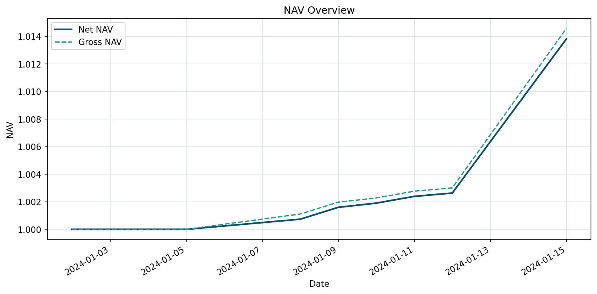
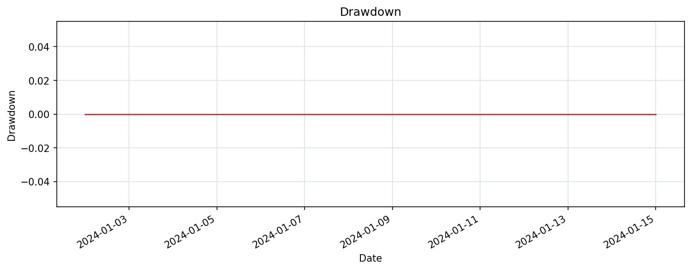
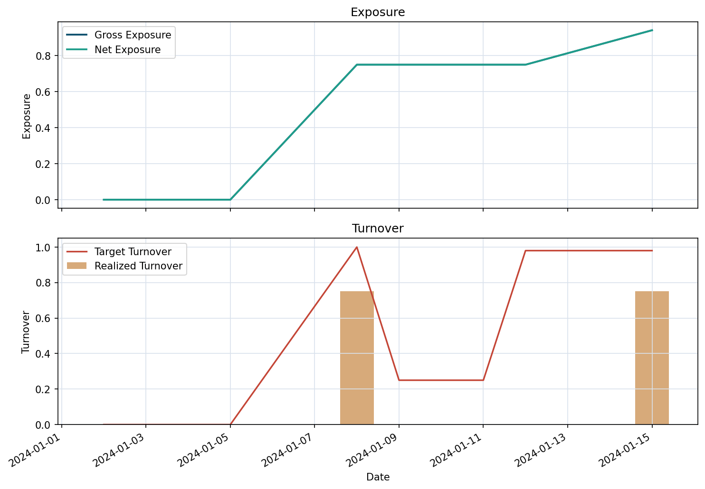
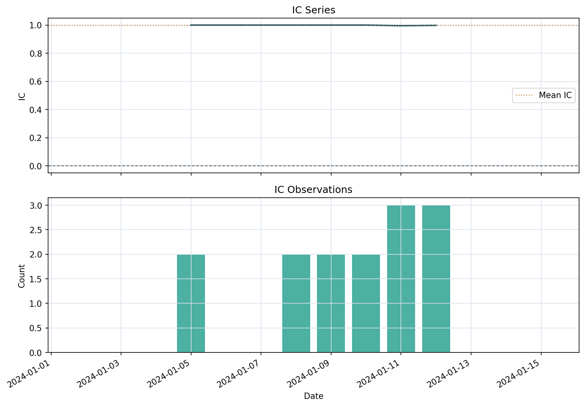
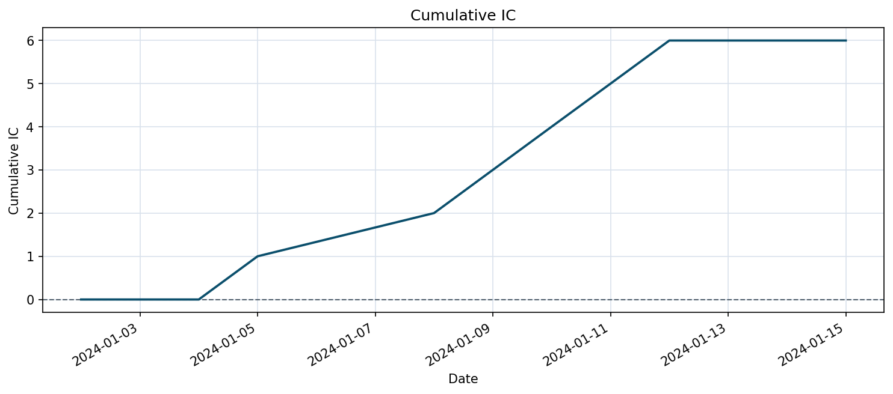
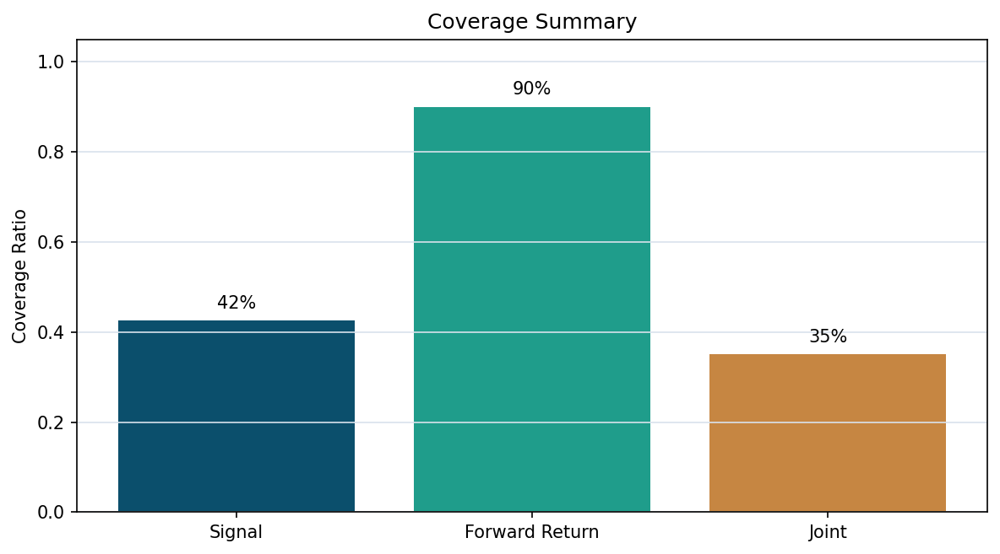
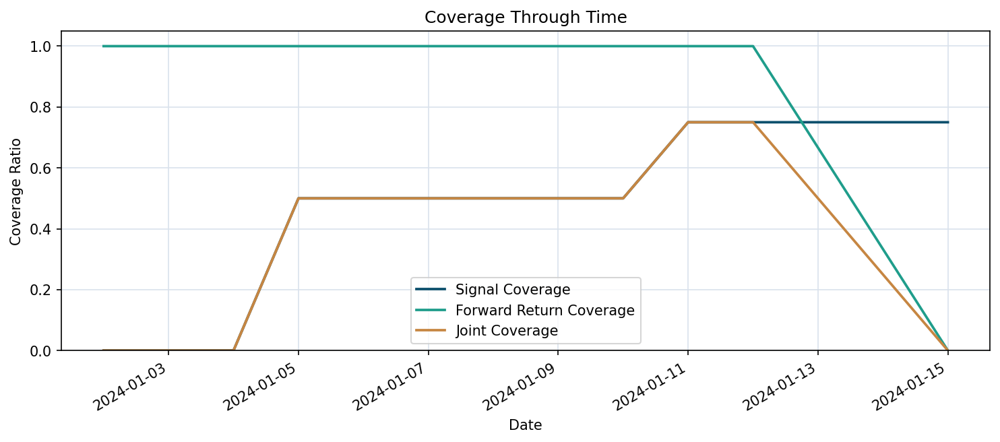
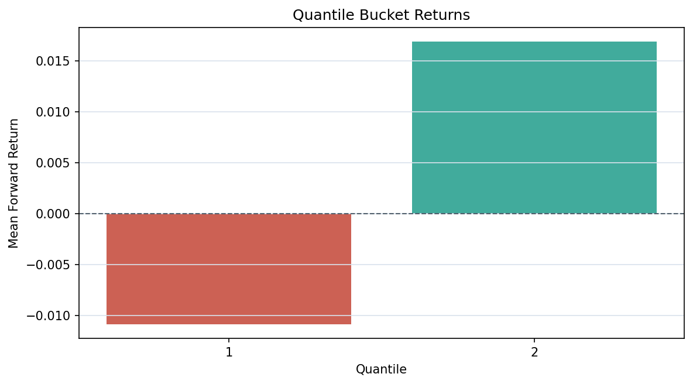
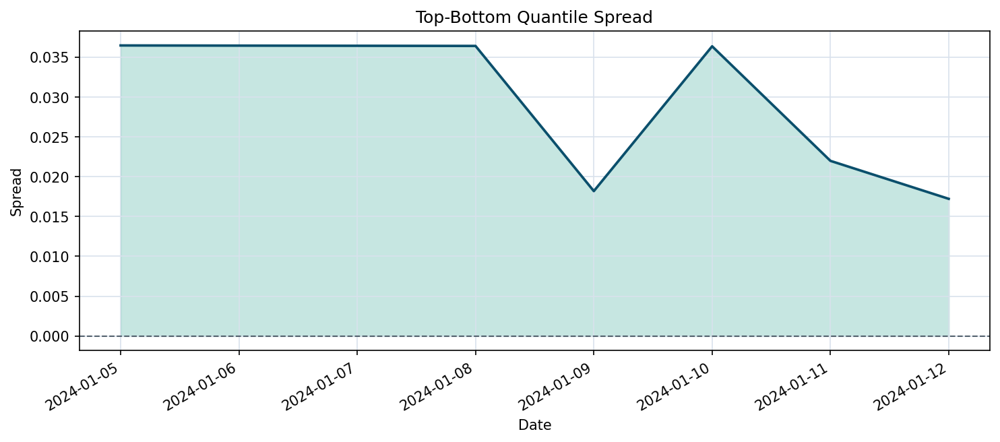
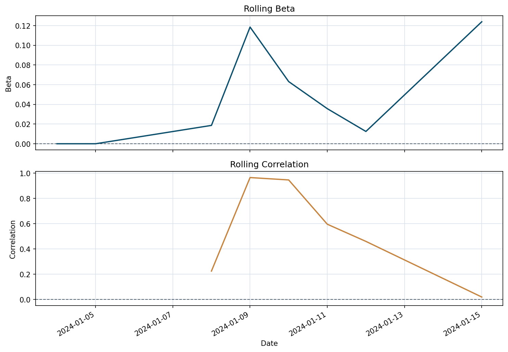

Performance Summary
periods
10.00
cumulative_return
1.38%
annualized_return
41.35%
annualized_volatility
5.48%
sharpe_ratio
6.34
max_drawdown
0.00%
average_turnover
0.15
total_turnover
1.50
hit_rate
60.00%
Strategy net/gross NAV plus benchmark-relative NAV when available.

Net-return drawdown path from the configured backtest.

Gross/net exposure plus target vs realized turnover.

Per-date IC values and observation counts.

Cumulative sum of per-date IC values with missing periods treated as zero.

Signal, forward-return, and joint usable coverage ratios.

Per-date signal, label, and joint usable coverage ratios.

Mean forward returns by within-date signal quantile.

Per-date top-minus-bottom quantile forward-return spread.

Rolling beta and rolling correlation versus the configured benchmark.

Research Workflow
Market Data File: example_strategies_ohlcv.csv
Benchmark: Synthetic Benchmark
Signal: momentum (lookback=2)
Signal Column: momentum_signal_2d
Label Column: forward_return_1d
Universe Filters: enabled
Portfolio: long_only, top_n=2, weighting=score
Rebalance Frequency: weekly
Data Summary
Rows: 40
Symbols: 4
Trading Dates: 10
Date Range: 2024-01-02 -> 2024-01-15
Data Quality Summary
Rows Per Symbol (min/avg/max): 10/10.00/10
Symbols Per Date (min/avg/max): 4/4.00/4
Close Range: 90.00 -> 120.00
Volume Range: 9000000.00 -> 33400000.00
Benchmark Configuration
Name: Synthetic Benchmark
Return Column: benchmark_return
Rolling Window: 3
Benchmark Summary
Rows: 10
Date Range: 2024-01-02 -> 2024-01-15
Average Daily Return: 0.33%
Realized Volatility: 5.85%
Universe Rules
Lag: 1 day(s)
Minimum Price: 95.0
Minimum Average Volume (3d): 14000000.0
Minimum Average Dollar Volume (3d): 1400000000.0
Minimum Listing History: 3 day(s)
Universe Summary
Eligible Rows: 17/40
Excluded Rows: 23/40
Eligible Symbols Ever: 3/4
Eligible Symbols Per Date (min/avg/max): 0/1.70/3
First Eligible Date: 2024-01-05
Exclusion Reasons: below_min_average_dollar_volume=9, insufficient_listing_history=8, insufficient_average_volume_history=8, insufficient_adv_history=8, below_min_average_volume=7, below_min_price=6, insufficient_universe_history=4
Portfolio Constraints
Construction: long_only
Top N: 2
Weighting: score
Target Exposure: 1.0
Max Position Weight: 0.6
Execution Assumptions
Signal Delay: 1 day(s)
Rebalance Frequency: weekly
Initial NAV: 1.0
Commission: 2.0 bps
Slippage: 3.0 bps
Max Turnover Per Rebalance: 0.75
Execution Summary
Rebalance Dates: 3/10
Turnover Limit Applied Dates: 2/10
Average Target Turnover: 0.37
Average Realized Turnover: 0.15
Average Gross Target Exposure: 0.60
Average Gross Exposure: 0.47
Average Target Holdings: 1.20
Average Realized Holdings: 1.30
Average Target-Effective Weight Gap: 0.22
Total Commission Cost: 0.03%
Total Slippage Cost: 0.04%
Total Transaction Cost: 0.07%
Performance Summary
Periods: 10
Cumulative Return: 1.38%
Annualized Return: 41.35%
Annualized Volatility: 5.48%
Sharpe Ratio: 6.34
Max Drawdown: 0.00%
Average Turnover: 0.15
Total Turnover: 1.50
Hit Rate: 60.00%
Relative Performance Summary
Periods: 10
Benchmark Cumulative Return: 3.34%
Benchmark Annualized Return: 129.03%
Excess Cumulative Return: -1.90%
Annualized Excess Return: -38.28%
Average Daily Excess Return: -0.19%
Tracking Error: 7.27%
Information Ratio: -6.66
Excess Hit Rate: 30.00%
Risk Summary
Periods: 10
Realized Volatility: 5.48%
Downside Volatility: 0.00%
VaR (95%): 0.00%
CVaR (95%): 0.00%
Average Gross Exposure: 0.47
Average Net Exposure: 0.47
Benchmark Risk Summary
Periods: 10
Rolling Window: 3
Valid Rolling Periods: 6
Average Rolling Beta: 0.05
Latest Rolling Beta: 0.12
Average Rolling Correlation: 0.54
Latest Rolling Correlation: 0.02
Diagnostics Overview
Mean IC: 1.00
IC IR: 592.84
Joint Coverage Ratio: 35.00%
Average Daily Usable Rows: 1.40
Top-Bottom Quantile Spread: 2.78%
IC Summary
periods 10.000000
valid_periods 6.000000
mean_ic 0.999005
ic_std 0.001685
ic_ir 592.838275
positive_ic_ratio 1.000000
average_observations 1.400000
Quantile Bucket Returns
quantile mean_forward_return mean_signal average_count periods
1 -0.010869 -0.020316 1.333333 6
2 0.016904 0.031678 1.000000 6
Coverage Summary
dates 10.000
total_rows 40.000
signal_non_null_rows 17.000
forward_return_non_null_rows 36.000
usable_rows 14.000
signal_coverage_ratio 0.425
forward_return_coverage_ratio 0.900
joint_coverage_ratio 0.350
average_daily_usable_rows 1.400
minimum_daily_usable_rows 0.000